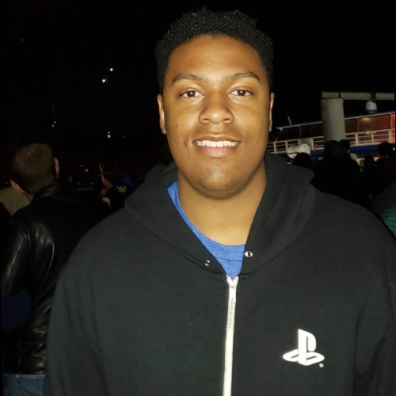

About Me

Hello! My name is Robert Bills!
I am a Senior at St John's University. Formerly majoring in Information Technology, I decided that Information Technology does not suit me toward the path I expected. My heart was in the right place, but not the passion, and so in my third year (Fall 2020), I switched majors from Information Technology to Computer Science, with a Minor in Communications.
My anticipated graduation is Fall 2021
Education
| Education | City, State | Year |
|---|---|---|
| Nea Community Learning Center | Alameda, CA | 2009-2014 |
| St Joseph Notre Dame HS | Alameda, CA | 2014-2017 |
| St John's University (Computer Science-Focused) | Jamaica, NY | 2017-202? |
Work Experience/Internships
- Joe and the Juice
- We have always been about coffee, juice and much more. In JOE & THE JUICE, “a Juicer” is not a machine! We focus 100% on people! Our fundamental purpose is to build a contemporary educational platform for how to prepare all people of our movement for a healthy life filled with aspiration and meaning. Because the world has changed, and what the world needs has changed.
- Oaklandish
- Our mission is to spread “local love” by way of our civic pride-evoking tees and accessories, while creating quality inner city jobs for locals, and giving back to the people and places that maintain our city’s trailblazer spirit. So, wear it well. When you rock these roots, you're representing and supporting Oakland
- Coro Northern California (circa 2015)
- At Coro, we believe that meaningful change comes from collaboration: people in business and communities, schools and unions, government and nonprofits, working together to find creative solutions and strengthen our democracy.
Work Experience
- ATM Banking System
- BrickBreaker Game
- Art1000C Final Project
- Data Mining w/Python
- JUnit Testing
Project Experience
Programming Skills
- Java (2017- Present)
- Scratch (2011'-2015')
- Weka(2020-Present)
- Python(2020-Present)
- C++ (2017-2020)
- Web Development (HTML, CSS, Javascript, Bootstrap) (2019-present)
General Interests and Hobbies
- Fighting Games
- Dragon Ball FighterZ
- Guilty Gear
- Marvel vs. Capcom 3
- Street Fighter
- Music Production
- Ableton Suite (Digital Audio Workstation; 4-5yrs), Serum (Sound Design VST; 2-3yrs)
Check out my SoundCloud profile!
Best Song: Daft Punk - One More Time
Favorite Websites
Anchor.fm
Best Film - My Cousin Vinny (R)

Best TV Show